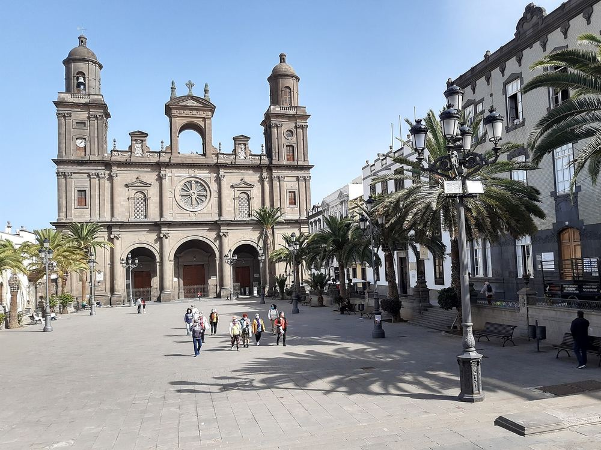
A pie · 1 h 30
Vegueta y la Catedral de Santa Ana
El barrio fundacional de la ciudad. La catedral y su plaza son el mejor punto de partida; si abre, merece la pena subir a la torre para ver los tejados de Vegueta.
Agrupación de centrosEl impacto de las Redes Sociales en la salud mental de las y los jóvenes
IES El Rincón · enero de 2027
Tres días de trabajo en Las Palmas, ideas para las tardes y un día completo para descubrir el norte de la isla: pueblos con historia, cuevas aborígenes y acantilados sobre el Atlántico.
¡Bienvenidos!
Desde el IES El Rincón damos la bienvenida a los compañeros del CIFP Xurdinaga LHII y del IES Francisco de Goya. Es un placer recibirles en Las Palmas y enseñarles un poco de nuestra isla.
Nos une la Agrupación de centros «El impacto de las Redes Sociales en la salud mental de las y los jóvenes». Además de trabajar juntos, queremos que estos días sirvan para conocernos y compartir tiempo fuera de las pantallas.
Después de las jornadas de trabajo les proponemos algunas ideas para las tardes en la ciudad y sus alrededores. Y para el fin de semana, un día completo por el norte de la isla: les llevamos nosotros en nuestros coches, con poco caminar y mucho paisaje.
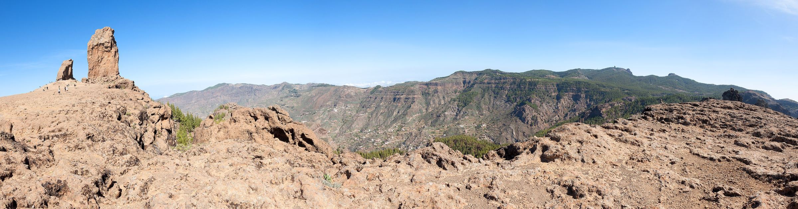
Montañas, barrancos y océano
Mapa interactivo
Las dos zonas de la visita: Las Palmas y alrededores para las tardes de los días de trabajo, y la zona norte para la excursión del fin de semana. Pulsen en un punto para verlo de cerca.
No se ha podido cargar el mapa. Revisen la conexión y recarguen la página.
La línea discontinua marca el orden de la excursión, no el trazado exacto de la carretera.
Dónde estamos
Pulsen el mapa o el botón para abrir el centro directamente en Google Maps.
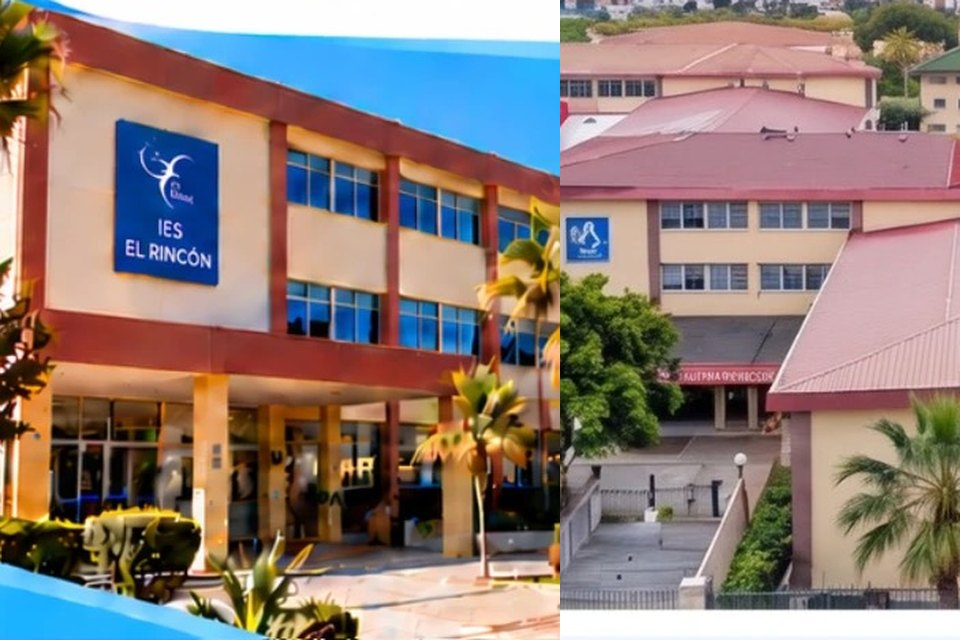
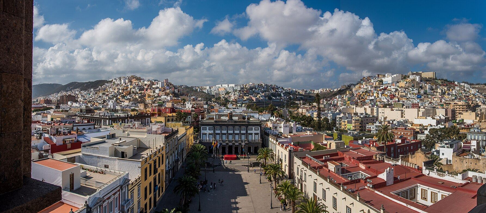
Después de las jornadas de trabajo
Días de trabajo en el IES El Rincón
Tres días de trabajo: lunes 18 a miércoles 20 o miércoles 20 a viernes 22, aún por confirmar. Para las tardes les dejamos algunas sugerencias en la ciudad y sus alrededores. Elijan las que más les apetezcan; ninguna requiere caminar mucho.

A pie · 1 h 30
El barrio fundacional de la ciudad. La catedral y su plaza son el mejor punto de partida; si abre, merece la pena subir a la torre para ver los tejados de Vegueta.
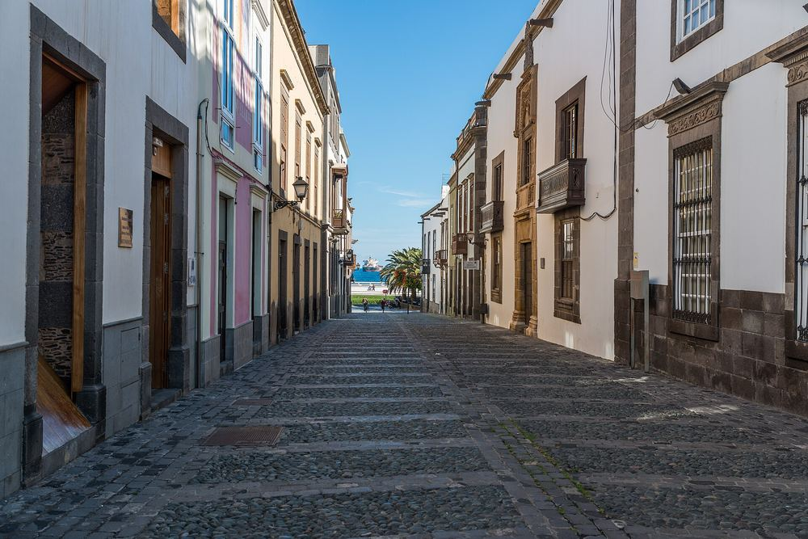
A pie · 1 h
La casa donde se alojó Colón en 1492 y la casa natal de Benito Pérez Galdós, a un paso entre sí por calles empedradas. Buena opción para terminar con una cena en Vegueta o Triana.
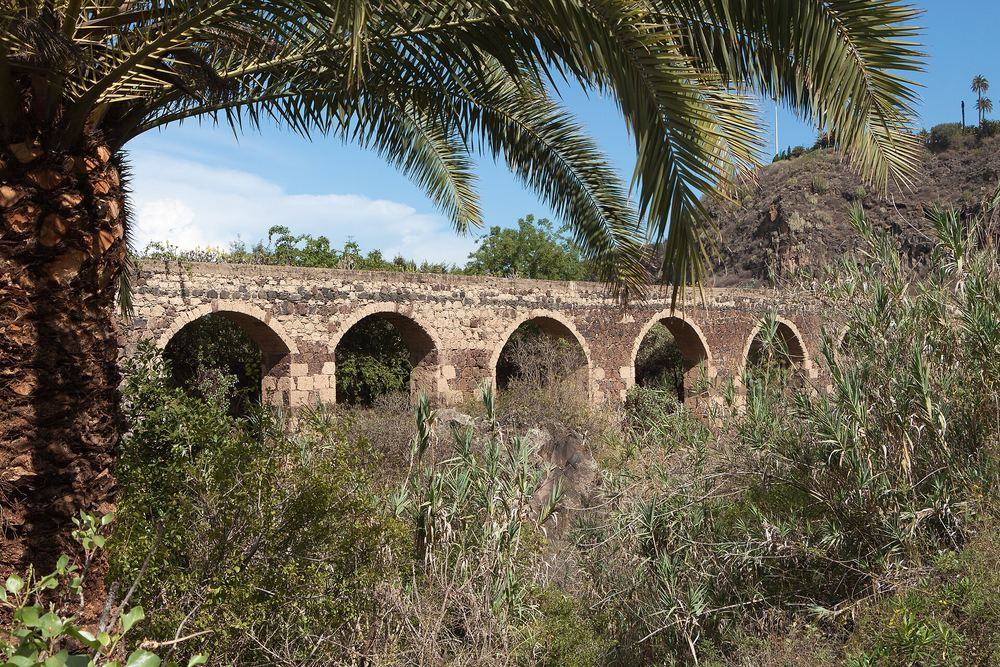
En coche · 20 min · 1 h 30
Jardines en Tafira con plantas de Canarias, dragos y cactus. Paseo tranquilo y casi sin cuestas, a 20 minutos del centro.
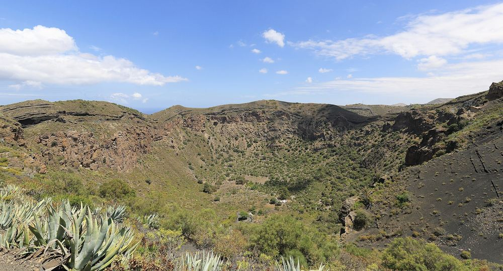
En coche · 25 min · 40 min
Un cráter enorme a las afueras de la ciudad. Desde el mirador del Pico de Bandama, al que se llega en coche, se ve media isla. Se combina muy bien con el Jardín Botánico.
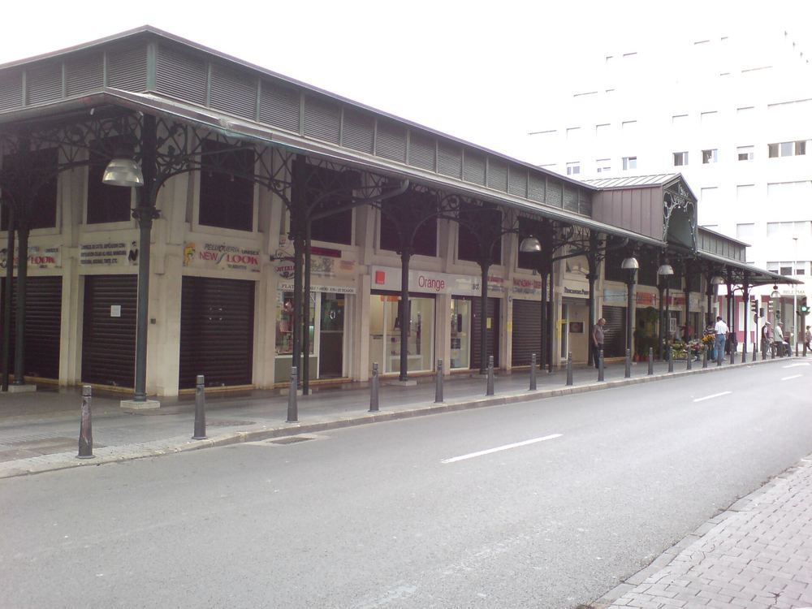
Cerca del centro · 1 h 30
Mercado de hierro de principios del siglo XX, hoy lleno de puestos de productos canarios. Ideal para cenar de tapas y comprar algún detalle de la isla.
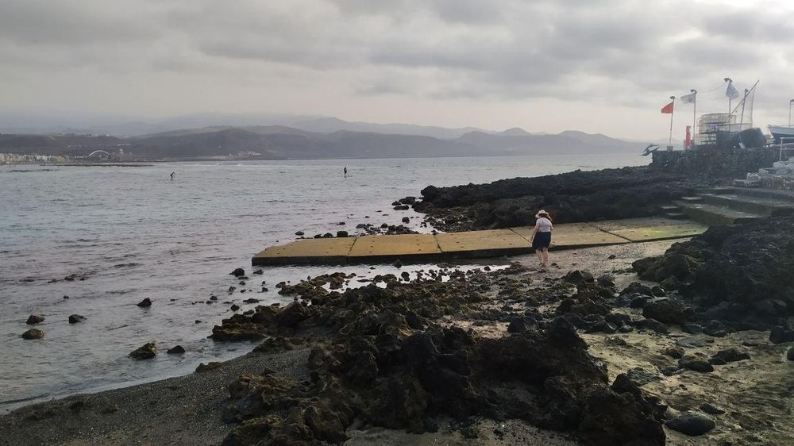
A pie · 40 min
El paseo marítimo de la ciudad, muy cerca del IES El Rincón. Perfecto para ver la puesta de sol sobre el océano sin necesidad de bañarse.
Excursión de un día
El día libre puede ser el fin de semana anterior (sábado 16 o domingo 17) o el posterior (sábado 23 o domingo 24). Está pensado como día completo en coche: pueblos, cuevas aborígenes y el mar.
Fin de semana · día completo
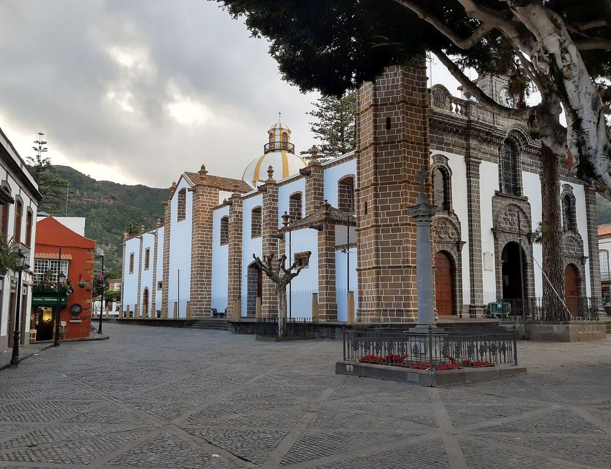
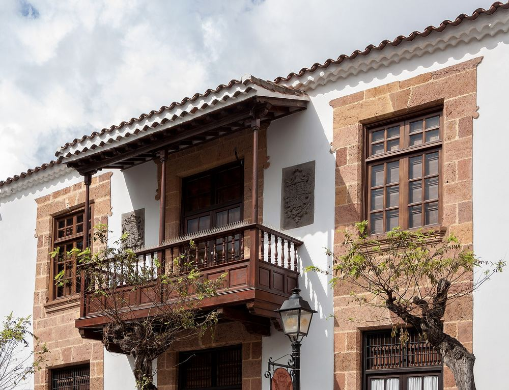
09:30 · 1 h
Pueblo tradicional con balcones de madera tallada. La Basílica de Nuestra Señora del Pino, patrona de la isla, es la visita principal.
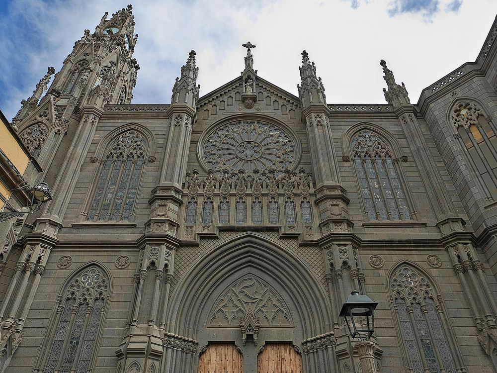
10:45 · 30 min
Iglesia neogótica de piedra volcánica oscura, conocida como la catedral de Arucas. Se aprecia muy bien desde la plaza.
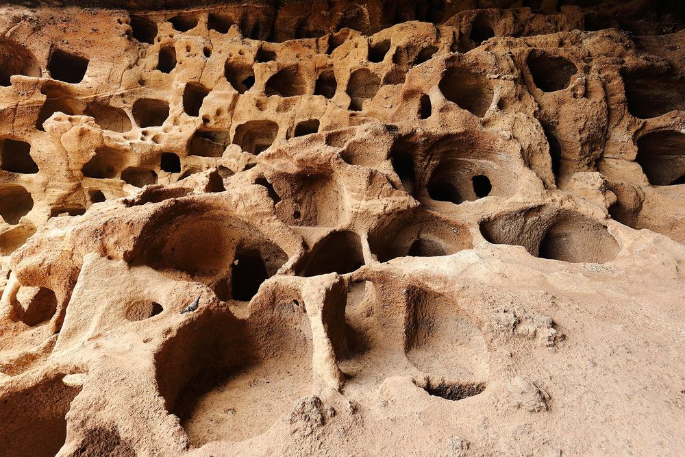
11:45 · 40 min
Un granero colectivo aborigen: cientos de cuevas excavadas en la roca bajo un arco natural, con mirador sobre la costa.
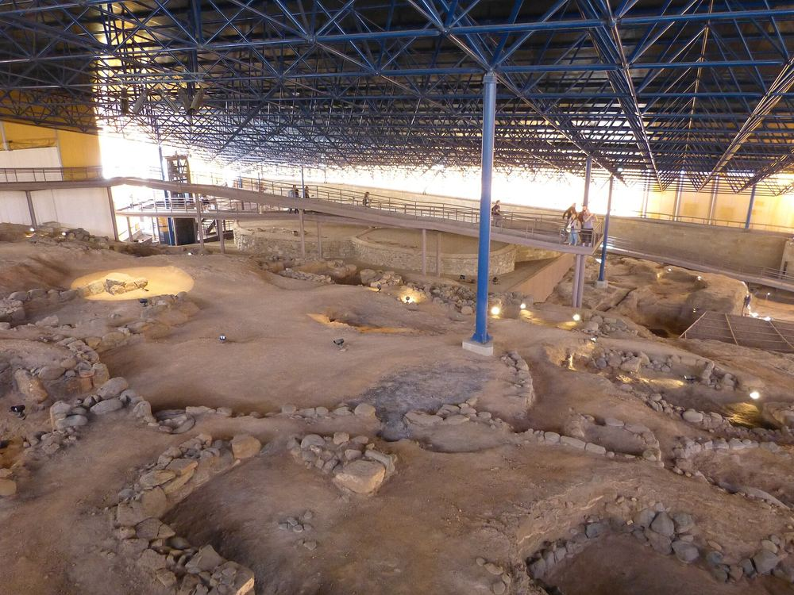
12:45 · 1 h
Un poblado aborigen excavado bajo una gran cubierta, con la cueva decorada con pinturas geométricas. La mejor forma de entender la historia de la isla.
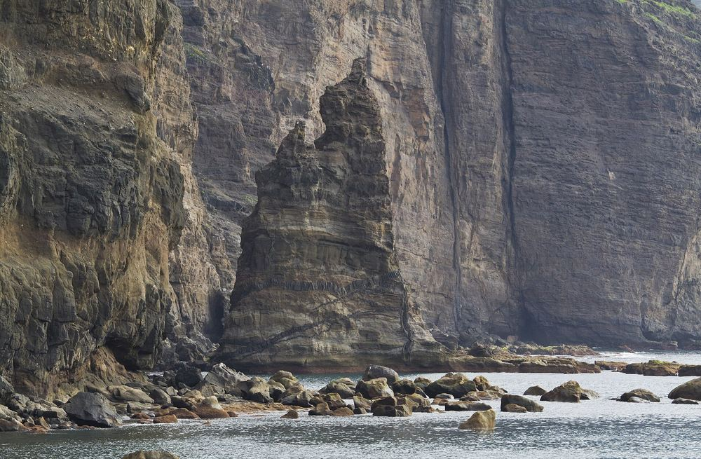
14:15 · 2 h
Puerto de las Nieves, un pueblo pesquero bajo grandes acantilados, con la silueta del Dedo de Dios junto al muelle. Comida de pescado fresco frente al mar.
Vuelta a Las Palmas por la costa norte · 1 h aprox.
Enero en la isla
En la capital, unos 18–21 °C de máxima y 14–16 °C de mínima. En el interior y las zonas altas refresca bastante más.
Enero suele tener mañanas despejadas y algún chubasco en el norte. Lleven chubasquero y capas.
Amanecer hacia las 8:00 y atardecer hacia las 18:20 (aprox.). Las vistas al atardecer desde Bandama son de las mejores.
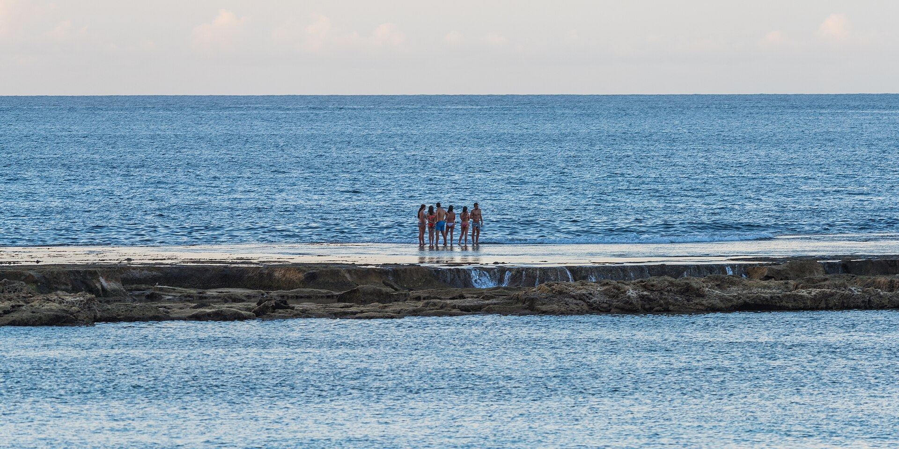
Antes de salir
Para no olvidar nada
Marquen lo que ya tengan. Las casillas se guardan solo en su navegador.
0 de 0 preparados
Para no parecer turistas
Algunas costumbres canarias que en la península no siempre se conocen.
Vayan practicando
Pulsen una tarjeta para darle la vuelta y ver qué significa. Después pónganse a prueba con el juego.
0 aciertos de 0
Todas las fotos son de Wikimedia Commons, con licencias libres.
Mapa: © colaboradores de OpenStreetMap.